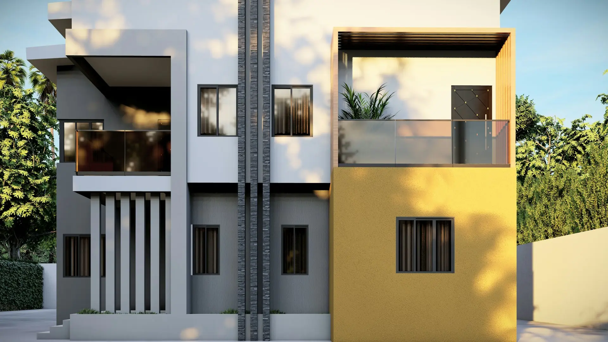
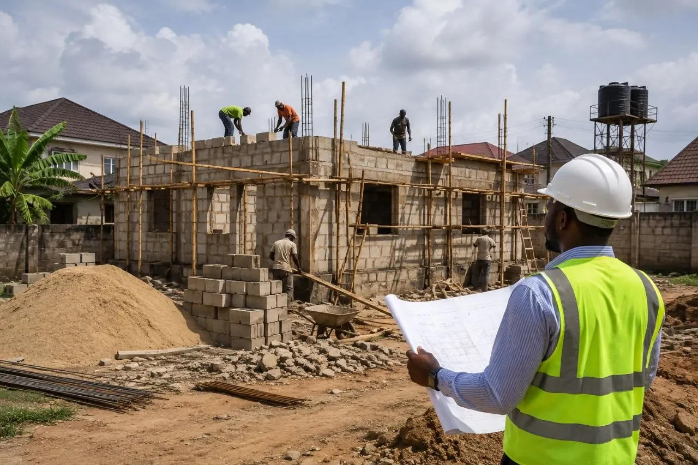

About Vergehold

Vergehold is a property oversight company built for one specific, underserved customer: the diaspora or absentee owner who has land, is building, or owns a home in Lagos — but cannot be physically present to protect their investment.
Rather than offering one service, we follow you through the full lifecycle of ownership. Whatever stage your property is at, there's a way for us to be your eyes on the ground.
Vergehold is led by a Nigerian Society of Engineers (NSE) Graduate Member with hands-on residential construction field experience — combined with a structured, accountable reporting system the informal "caretaker" market doesn't offer.

Lagos is undergoing rapid, sustained development — driven by the Lekki Free Trade Zone, the Dangote Refinery, the deep sea port, and the wave of residential and commercial construction that follows.
That growth creates a large and growing pool of property owners — many overseas — who are actively seeking oversight they can trust. We built Vergehold to be that oversight.